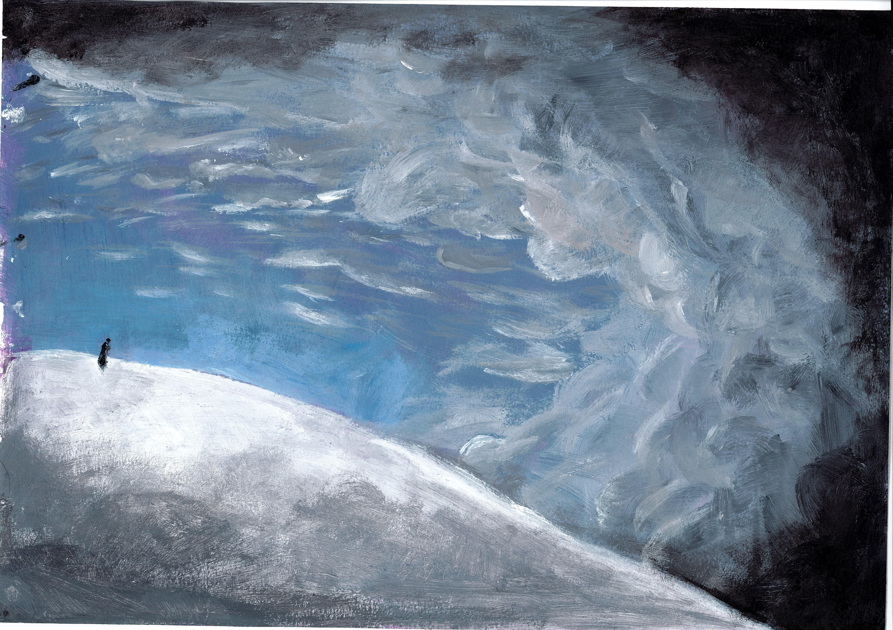

04/11/26

part i: when's the last time you got lost
i remember my first yfc camp. i was young and so scared of sleeping out of the house. surrounded by new people doing things i had never seen before. it was disorienting and confusing and so, so scary. despite that, i've stuck with yfc and volunteer with them today. i remember my first day at school in lebanon. new language. i didn't understand a word of what was spoken around me. it was so scary. i blame a portion of my current anxieties on my experiences at that school.
when was the last time you experienced something like that? doing something entirely new, disorienting, scary. not even having the vocabulary to describe the mess you're in.
i went snowboarding for the first time last year. i knew exactly what i was doing; i watched a youtube video on my way up the mountain. i started by taking a ski lift all the way to the top, because like, how hard could it be, and the lower ones were really crowded. it maybe took an hour for me to get down the slope the first time. my wrists hurt so much from falling. at some point, exhausted, i sat down and was halfway to tears. i was scared i'd have to do the walk of shame: carry the snowboard on my back as i walked down the mountain. i made it down eventually, with the newfound knowledge of how to snowboard, and i went straight back up. by the end of the day i had gotten the hang of it. i could swish from side to side and sometimes even make it all the way down without falling. it was such a scary day. but it was so rewarding.
a couple years back i went to a bachata class. the first time was free and i thought it'd be something fun to do with the girl i was dating at the time. i am an awful dancer. i can do all the moves in theory, but when i do them my body just doesn't move right. this was no different, and i don't think i was too good at it by the end either. however, it was really fun. i couldn't tell you what moves we did, and couldn't even tell you the genre of music we were dancing to, but it was really fun.
part ii: what do we call these situations
scary experiences? i'm not sure if being scary is what classifies these experiences. new experiences? there's definitely something about experiencing these far more when you're young. perhaps childlike experiences? i know these experiences are significant, and we should all go out of our way to be put in these situations more often, but i'm not sure why.
when we're first born, we don't know how to react to anything around us. when a baby sees a dog for the first time, they look to their parents to see if this is something they should be scared of. if their parents scream, they'll scream. everything is still unknown, but they're guided on how to react.
when a person becomes a toddler they're finally able to express themselves a little and have more intricate emotions: deeper joys and more complex anxieties. when a child goes to school for the first time things might still be scary, especially since they don't have their parents face to look back on to gauge what the proper reaction is. beyond scary things are still completely unknown. but should that really be the case? i've recently heard that before a child's first day of school parents should be getting them prepared for it. tell them how to feel so it's not as scary: you'll have fun/you'll make new friends. tell them where they'll go, how their day will be structured. nothing is really unknown anymore. but does this mean the child is no longer afraid or just has the tools to tackle the scary things. and despite knowing what might happen, does that make things feel any less new.
furthermore, if a person is constantly exposed to new things, will they continue being scared of them, or will they get used to it. or instead, might they simply get used to being afraid; become at peace with their fear.
this reminds me a bit of a line from nelson mandela's "long walk to freedom" which i have not read, "i learned that courage was not the absence of fear, but the triumph over it. the brave man is not he who does not feel afraid, but he who conquers that fear."
do normal people even feel this scared doing new things, or is my brain just a little special.
i started writing this portion expecting to be able to give a few qualifiers to be able to identify these situations, and finally decide on a name, but i've finished writing this and don't quite have any answers. the one thing that i'm quite certain of is that i really need to put myself in these situations more often.
part iii: whats next
an improv theater group once came to a very overfunded camp i was at. it was my first time seeing anything like it, and i really liked it. i even went to a few more of their shows afterwards. i was talking to elie once and he recommended i try improv myself. he said it'd help with my anxiety. "have you ever done it?" "no, but i don't need it." i still think about his recommendation from time to time. maybe one day i'll try improv out, it still seems fun. but for now, it's just too scary.